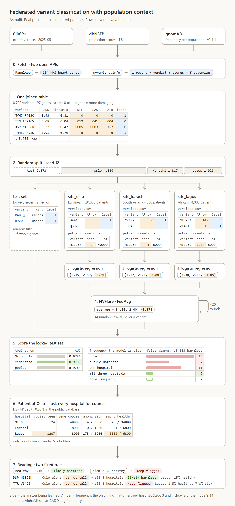
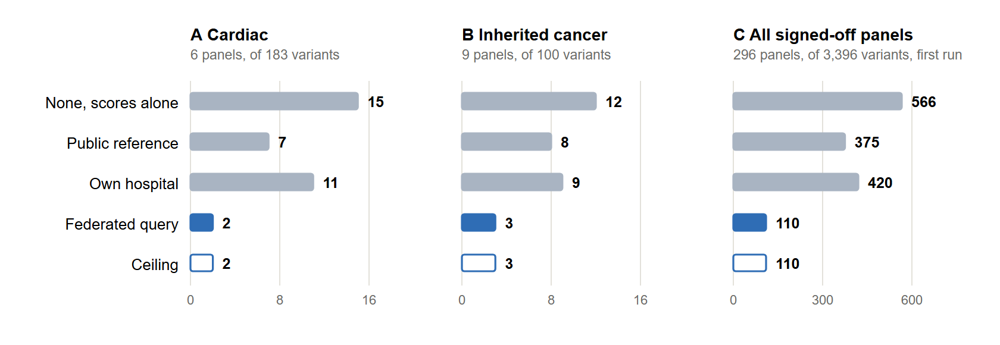
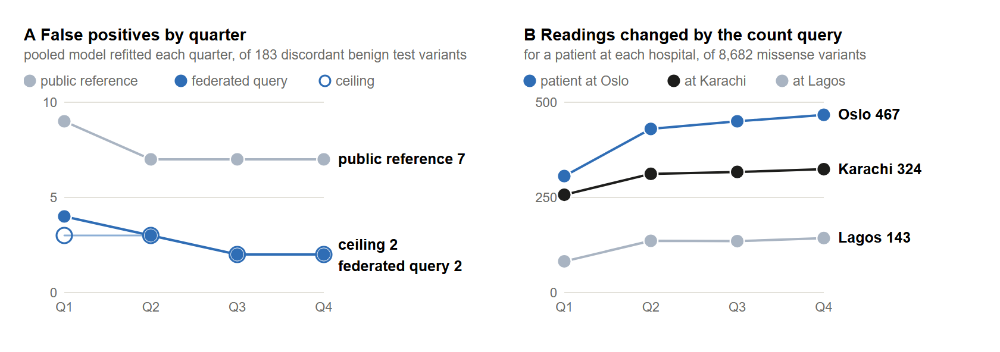

REFLECT, Respectfully Exchanging Federated-Learning Evidence across Clinics, Together: population-aware variant classification across three simulated hospitals
Yan Li, , Department of Public Health, University of Copenhagen, Denmark, ORCID 0009-0004-6076-1570
Mohit B. Panwar, mohit.panwar@gu.se, Department of Clinical Neuroscience, Institute of Neuroscience and Physiology, Sahlgrenska Academy, University of Gothenburg, Gothenburg, Sweden, ORCID 0009-0002-8866-8170
Shreya Srivastava, , Department of Computational and Data Sciences, Indian Institute of Science, Bengaluru, India, ORCID
Oumaima Boussouis, , ENSIAS, Mohammed V University in Rabat, Morocco, ORCID 0009-0005-6498-3805
How common a genetic variant is in the general population is strong evidence on whether it can cause a rare disease, and public frequency references cover ancestries unevenly. We built a reproducible prototype from open data in which three simulated hospitals, each serving one ancestry group, hold the frequency evidence that a European-only public reference lacks. ClinVar classifications, dbNSFP prediction scores and gnomAD frequencies were assembled for 8,790 missense variants in 97 cardiac genes from NHS-approved PanelApp panels, a logistic regression was trained at each hospital, on pooled data and by federated averaging in NVIDIA FLARE, and a count query returns carrier counts from each hospital and no patient record. The source of frequency evidence left ranking almost unchanged, AUC 0.975 to 0.981, and changed decisions: among 183 benign test variants common in one population and rare in another, the model produced 15 false positives without frequency, 7 with the public reference and 2 when the hospitals exchanged counts, equal to gnomAD's own per-population frequencies, at a sensitivity of 0.92. Federated averaging matched pooled training in five runs. The pattern repeated on 41 inherited cancer genes, 12, 8 and 3 of 100, and on a first run over all 296 NHS signed-off panels, 566, 375 and 110 of 3,396, with 266 false positives removed and 1 introduced. Outside missense the mutation type matched the label for 99.7% of 66,298 variants, so the model stays missense-only and the count query covers the other types with one canonical spelling for insertions and deletions.
federated learning, variant classification, allele frequency, genetic ancestry, ClinVar, NVIDIA FLARE, gene panels, count query
Team 12: Population frequency is among the most decisive lines of evidence when a laboratory classifies a variant as pathogenic or benign. Under the ACMG/AMP guidelines an allele frequency above what the disorder can account for is strong evidence that a variant is benign [1], and that reasoning holds only when the reference population resembles the patient. Manrai et al. described variants reported to patients of African or unspecified ancestry as causes of hypertrophic cardiomyopathy and later reclassified as benign, being far more common among Black Americans than the reference suggested [2]. gnomAD samples ancestry groups unevenly [3]. The missing counts exist inside hospitals that serve those populations, whose patient-level data rarely leave them. Federated learning lets sites train a shared model and exchange only its parameters [4], with NVIDIA FLARE as a framework and simulator [5], and the GA4GH Beacon v2 standard lets an institution report carrier counts without releasing records [6]. Montalvo et al. reported that pathogenicity classifiers trained by federated learning across ClinVar submitters could match centralised training [7]. Our prototype follows the same logic with one added design choice: each simulated hospital serves a different ancestry group and holds frequency evidence that the public reference lacks. We ask whether the classification of a variant changes once that evidence is shared as aggregate counts, whether the answer holds in a second disease area and at the scale of every NHS signed-off gene panel, and whether a count query can cover the mutation types that a prediction model cannot.
Team 12:
Link to Repository: https://github.com/collaborativebioinformatics/Mildly-Flirting-With-Federated-Learning-for-Clinical-Diagnostics
Every table is rebuilt from public sources with a fixed seed (Figure T.12.1). Genes came from NHS signed-off Genomics England PanelApp panels [8] at pinned versions: six cardiac panels with 104 green genes, nine inherited cancer panels with 41, and all 296 signed-off panels with 4,206 genes as a first look at scale. For each gene, ClinVar classifications [9], dbNSFP rank scores [10] and gnomAD v2.1.1 population frequencies [3] were retrieved as one record per variant from the hg38 index of myvariant.info [11], restricting the table to missense variants. A variant was labelled pathogenic when every starred ClinVar submission called it pathogenic or likely pathogenic, benign when every one called it benign or likely benign, and dropped otherwise. Tools trained on ClinVar or HGMD labels were excluded, to limit circularity [12], and scores missing for more than 30% of variants were set aside. On the all-panels list, genes that returned nothing under the panel's symbol were queried again under their current and previous HGNC symbols [13], which recovered 228 of 356. A variant was flagged population-discordant when its frequency reached 0.1% in one of the European, South Asian or African groups and was at least ten times lower in another; the flag is never a model input.
A seeded split locked a test set, a random fifth grouped by gene and amino-acid position plus every variant of six withheld genes, and dealt the rest to three simulated hospitals: Oslo (European, 20,000 patients), Karachi (South Asian, 4,000) and Lagos (African, 4,000). Carrier counts among unaffected patients were drawn from the gnomAD frequency of each hospital's population and carry no label information; counts among affected patients were generated from the label, serve the demonstration only and never enter a model. The public reference given to every hospital was the European frequency alone, a stand-in for populations that references cover poorly.
The model is a logistic regression on the rank scores and one fixed log transform of frequency, 14 coefficients for the cardiac area and 17 for the other two, with the decision threshold set on training data at 95% sensitivity. It was trained at each hospital, on pooled data, and by federated averaging in NVIDIA FLARE 2.9.0 over 20 rounds, on five re-drawn partitions. The pooled model was scored with frequency from six sources: none, the European public reference, the own hospital, a federated query returning the highest unaffected-patient frequency among the three hospitals, the public reference combined with that query, and a ceiling from gnomAD's own per-population frequencies that no hospital could use, following Whiffin et al. [14]. We report AUC, false positives among population-discordant benign test variants, sensitivity, and an exact sign test on the variants whose call changed.
A count query returns each hospital's carriers among unaffected and affected patients, with counts under 5 hidden, and reads them with two fixed rules: likely harmless when the unaffected frequency reaches a per-gene line anywhere, 0.1% for genes where one damaged copy causes disease and 1% where PanelApp records that two are required, and kept flagged when the variant is at least three times more frequent among affected patients where it is common. The trained model's probability is shown beside the rules, computed exactly as in training. For the cardiac genes the query also covers every other small mutation, 73,570 ClinVar variants with a presumption from the mutation type, and every insertion or deletion is left-aligned against GRCh38 to one canonical spelling [15, 16]. A quarterly replay cuts the final cohorts and verdicts into nested quarters and refits the pooled model, standing in for the federated one, on each.

Figure T.12.1. The prototype as built. Two open interfaces deliver the gene list and three public sources as one table; a seeded split locks the test set and deals the rest to three simulated hospitals; each fits a logistic regression and NVIDIA FLARE averages the 14 coefficients over 20 rounds; the locked set scores the result; and a count query returns counts that two fixed rules read. Patient counts are simulated and all other values are real.

Figure T.12.2. False positives of the pooled model among population-discordant benign test variants, by disease area and source of frequency evidence, at the threshold fixed on training data: 183 cardiac variants, 100 inherited cancer variants and 3,396 variants across all signed-off panels, the last from a first run. Blue marks the federated query and the hollow bar the ceiling that no hospital could use.

Figure T.12.3. The quarterly replay of the cardiac area. Left, false positives among the 183 population-discordant benign test variants under the pooled model refitted each quarter, by source of frequency evidence. Right, the number of variants whose rule-based reading changes for a patient at each hospital once the other two answer, out of 8,682 missense variants. The fourth quarter reproduces the build.
Team 12: The cardiac table holds 8,790 missense variants in 97 genes, 4,960 pathogenic and 3,830 benign, and the locked test set 2,373 variants, 183 of them population-discordant and benign. Ranking barely depended on the frequency source: AUC was 0.971 without frequency and 0.976 to 0.981 with it, and single-hospital models matched the pooled model within 0.003. Most of that AUC reflects how the labels were made, since AlphaMissense alone reaches 0.950 and gene identity alone 0.916, and 84.6% of benign test variants are reported in gnomAD against 11.5% of pathogenic ones. Decisions did change. Among the 183 population-discordant benign test variants the model produced 15 false positives without frequency, 7 with the European public reference, 11 with Oslo's own patients and 2 with the federated query, equal to the ceiling (Table T.12.1, Figure T.12.2). The federated query removed 5 of the public reference's false positives and introduced none, p = 0.0625, the smallest value a sign test can return with five changed calls; on all 1,221 benign test variants it removed 20 and introduced 8, p = 0.036. Sensitivity stayed between 0.917 and 0.921, with 3 of 1,152 pathogenic variants losing their flag. Across 200 re-simulated cohorts the federated result stayed at 2 or 3. Federated averaging matched pooled training in five runs, mean AUC 0.9783 against 0.9784 with 2 false positives each, and the coefficient for log frequency came through the averaging at −3.57 against −3.73.
Table T.12.1. False positives of the pooled model among population-discordant benign test variants in the three disease areas, by source of frequency evidence. The cardiac and inherited cancer runs are official; the all-panels values come from the same scripts run unchanged on that table and are a first look.
| Frequency evidence | Cardiac, of 183 | Inherited cancer, of 100 | All signed-off panels, of 3,396 |
|---|---|---|---|
| None, scores alone | 15 | 12 | 566 |
| Public reference | 7 | 8 | 375 |
| Own hospital | 11 | 9 | 420 |
| Federated query | 2 | 3 | 110 |
| Ceiling | 2 | 3 | 110 |
| Removed and introduced, public reference to federated query | 5 and 0 | 5 and 0 | 266 and 1 |
| Exact p | 0.0625 | 0.0625 | 2.3 × 10−78 |
| Sensitivity, public reference and federated query | 0.919 and 0.919 | 0.912 and 0.911 | 0.948 and 0.947 |
The pattern repeated on the inherited cancer genes with nothing changed: 12, 8, 9 and 3 false positives of 100, again 5 removed and none introduced, sensitivity 0.912 and 0.911, and federated averaging equal to pooled training in five NVIDIA FLARE runs with 3 false positives each. On the first run over every signed-off panel the counts were 566, 375, 420 and 110 of 3,396, with 266 removed and 1 introduced, p = 2.3 × 10−78, and sensitivity 0.948 and 0.947. Split by inheritance the reduction appears in every class and is largest in genes that need two damaged copies, where 96 of the table's 136 pathogenic population-discordant variants sit. The per-gene line of the query keeps 123 of the 129 pathogenic variants that a single 0.1% line had cleared across all panels, and 6 recessive alleles, HFE C259Y at 5.74% among them, remain above 1%. Outside missense the mutation type matched the label for 66,099 of 66,298 cardiac variants, so the model stays missense-only; of 84 benign variants presumed harmful by their type the hospitals together clear 3, and rule 1 wrongly clears 1 pathogenic frameshift. Of 8,890 insertions and deletions, 6,494 have more than one valid spelling, and a 25-letter MYBPC3 deletion at 3.21% among South Asians returned zero carriers from Karachi until the spelling was normalised. In the quarterly replay the federated query gave 4, 3, 2 and 2 false positives against 9, 7, 7 and 7 for the public reference, and the count query changed 306, 430, 450 and 467 readings for a patient at Oslo (Figure T.12.3).
Team 12: In this simulation, exchanging aggregate carrier counts recovered the benefit of population-matched frequency data. It removed most false positives on benign variants that are common in one population and rare in the reference, patient records stayed in place, and federated training cost no accuracy. The result repeated in a second disease area and reached conventional significance once the table covered every NHS signed-off panel, where genes that need two damaged copies show the limit of a single frequency line. The claims are bounded by the design. Patients are simulated from the same gnomAD frequencies that define the ceiling. Counts among affected patients are generated from the label and are never evidence. The cardiac test set holds no pathogenic population-discordant variant, and TTR V142I, scored as unseen, is cleared by the model under every source of frequency. ClinVar labels lean on the same frequencies and scores, so the AUC is the scores' known performance on consensus labels. The all-panels numbers are a first look without a federated run, and the quarterly replay uses the pooled fit in place of federated training. Next steps are an official run of steps 2 to 4 on the all-panels table, a per-gene or disease-specific frequency line inside the model, a pooled exact test for the pile-up rule, the NVIDIA FLARE proof-of-concept mode and its federated statistics workflow for the counts, and a ranked shortlist of candidate diseases from patient symptoms using the Human Phenotype Ontology [17].
Team 12: The pipeline code is publicly available at https://github.com/collaborativebioinformatics/Mildly-Flirting-With-Federated-Learning-for-Clinical-Diagnostics, released under the MIT License. The patient query runs as a web page at https://collaborativebioinformatics.github.io/Mildly-Flirting-With-Federated-Learning-for-Clinical-Diagnostics/demo/. All data sources are open: Genomics England PanelApp [8]; ClinVar release 2025-05 [9], dbNSFP 4.8a [10] and gnomAD v2.1.1 exomes [3], retrieved through the hg38 index of myvariant.info [11]; HGNC gene symbols [13]; and the GRCh38 assembly from UCSC. dbNSFP is distributed for academic use under CC BY-NC-ND 4.0, so the derived tables are not redistributed and are rebuilt by the commands in the repository. gnomAD data are released under CC0.
[To be completed by the team.]
[To be completed by the team.]
[To be completed by the team.]
[Hackathon name, organisers and compute sponsors to be added.]